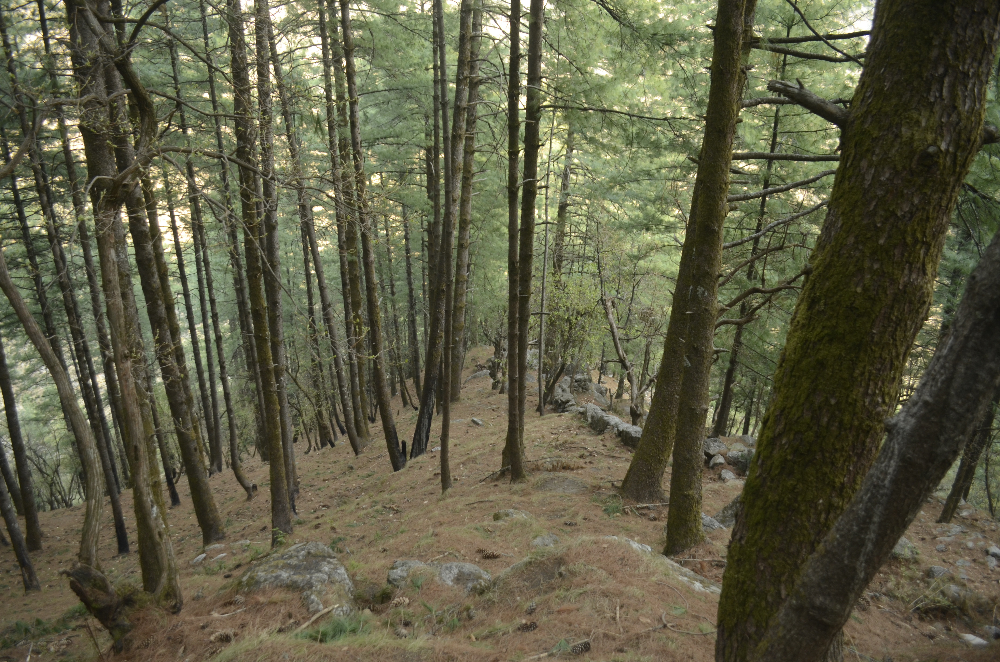
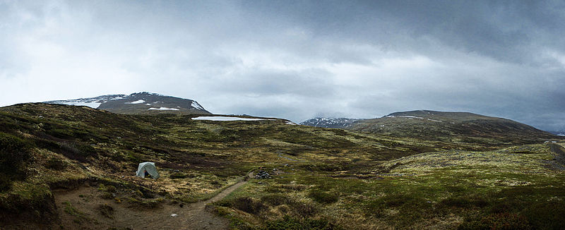
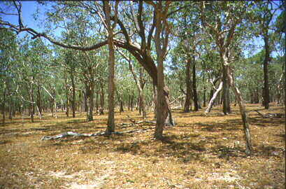
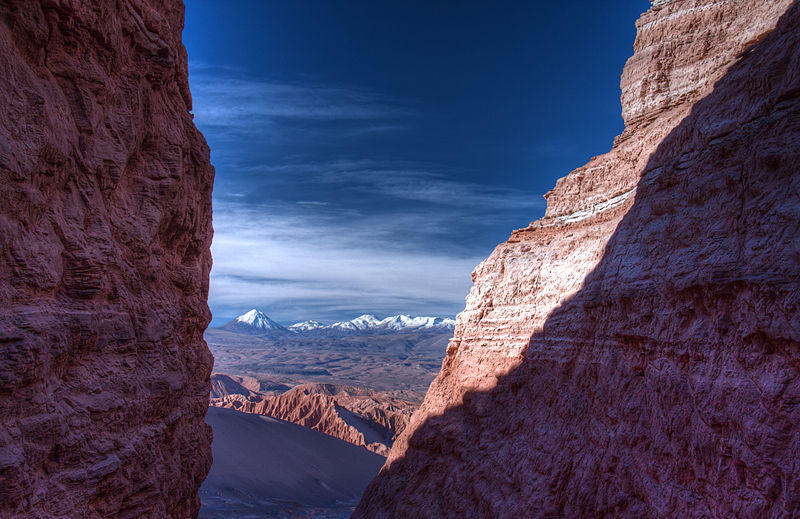

A biome /ˈbaɪoʊm/ is a formation of plants and animals that have common characteristics due to similar
climates and can be found over a range of continents. Spanning continents, Biomes are distinct
biological communities that have formed in response to a shared physical climate. Biomes are distinct
from habitats, because any biome can comprise a variety of habitats.
A biome contrasts with a microbiome. A microbiome is also a mix of organisms that coexist in a defined
space, but on a much smaller scale. For example, the human microbiome is the collection of bacteria,
viruses, and other microorganisms that are present on a human.
The term was suggested in 1916 by Clements, originally as a synonym for biotic community of Möbius
(1877). Later, it gained its current definition, based on earlier concepts of phytophysiognomy,
formation and vegetation (used in opposition to flora), with the inclusion of the animal element and
the exclusion of the taxonomic element of species composition. In 1935, Tansley would add the climatic
and soil aspects to the idea, calling it ecosystem. The International Biological Program (1964-74)
projects would popularize the concept of biome.
However, in some contexts, the term biome is used in a different manner. In German literature,
particularly in the Walter terminology, the term is used similarly as biotope (a concrete geographycal
unit), while the biome definition used in this article is used as a international, non-regional,
terminology - irrespectively of the continent in which an area is present, it takes the same biome
name - and corresponds to his "zonobiome", "orobiome" and "pedobiome" (biomes determinated by climate
zone, altitude or soil).
In Brazilian literature, the term "biome" is sometimes used as synonym of "biogeographic province",
an area based on species composition (the term "floristic province" being used when plant species are
considered), or also as synonym of the "morphoclimatic and phytogeographical domain" of Ab'Sáber, a
geographic space with subcontinental dimensions, with the predominance of similar geomorphologic and
climatic characteristics, and of a certain vegetation form. Both includes many biomes in fact.
Temperate Coniferous Forest
Temperate coniferous forest is a terrestrial biome found in temperate regions of the world with warm summers and cool winters and adequate rainfall to sustain a forest. In most temperate coniferous forests, evergreen conifers predominate, while some are a mix of conifers and broadleaf evergreen trees and/or broadleaf deciduous trees. Temperate evergreen forests are common in the coastal areas of regions that have mild winters and heavy rainfall, or inland in drier climates or mountain areas. Coniferous forests can be found in the United States, Canada, Europe, and Asia. Many species of tree inhabit these forests including cedar, cypress, Douglas fir, fir, juniper, pine, podocarpus, spruce, redwood and yew. The understory also contains a wide variety of herbaceous and shrub species.
Tundra
In physical geography, tundra is a type of biome where the tree growth is hindered by low temperatures and short growing seasons. The term tundra comes through Russian тундра (tûndra) from the Kildin Sami word tūndâr "uplands", "treeless mountain tract". There are three types of tundra:
- Arctic tundra
- Alpine tundra
- Antarctic tundra
In tundra, the vegetation is composed of dwarf shrubs, sedges and grasses, mosses, and lichens. Scattered trees grow in some tundra regions. The ecotone (or ecological boundary region) between the tundra and the forest is known as the tree line or timberline.
Savanna
A savanna or savannah is a mixed woodland grassland ecosystem characterised by the trees being sufficiently widely spaced so that the canopy does not close. The open canopy allows sufficient light to reach the ground to support an unbroken herbaceous layer consisting primarily of grasses. Savannas maintain an open canopy despite a high tree density. It is often believed that savannas feature widely spaced, scattered trees. However, in many savannas, tree densities are higher and trees are more regularly spaced than in forests. The South American savanna types cerrado sensu stricto and cerrado dense typically have densities of trees similar to or higher than that found in South American tropical forests, with savanna ranging 800–3300 trees/ha and adjacent forests with 800–2000 trees/ha. Similarly Guinean savanna has 129 trees/ha, compared to 103 for riparian forest, while Eastern Australian sclerophyll forests have average tree densities of approximately 100 per hectare, comparable to savannas in the same region.
Desert
A desert is a barren area of land where little precipitation occurs and consequently living conditions are hostile for plant and animal life. The lack of vegetation exposes the unprotected surface of the ground to the processes of denudation. About one third of the land surface of the world is arid or semi-arid. This includes much of the polar regions where little precipitation occurs and which are sometimes called polar deserts or "cold deserts". Deserts can be classified by the amount of precipitation that falls, by the temperature that prevails, by the causes of desertification or by their geographical location.
Taiga

Taiga also known as boreal forest or snow forest, is a biome characterized by coniferous forests consisting mostly of pines, spruces and larches. The taiga is the world's largest biome apart from the oceans. In Eurasia, it covers most of Sweden, Finland, much of Norway, some lowland/coastal areas of Iceland, much of Russia from Karelia in the west to the Pacific Ocean (including much of Siberia), and areas of northern Kazakhstan, northern Mongolia, and northern Japan (on the island of Hokkaidō). However, the main tree species, the length of the growing season and summer temperatures vary. For example, the taiga of North America mostly consists of spruces; Scandinavian and Finnish taiga consists of a mix of spruce, pines and birch; Russian taiga has spruces, pines and larches depending on the region, while the Eastern Siberian taiga is a vast larch forest.
Wetland

A wetland is a land area that is saturated with water, either permanently or seasonally, such that it takes on the characteristics of a distinct ecosystem. The primary factor that distinguishes wetlands from other land forms or water bodies is the characteristic vegetation of aquatic plants, adapted to the unique hydric soil. Wetlands play a number of roles in the environment, principally water purification, flood control, carbon sink and shoreline stability. Wetlands are also considered the most biologically diverse of all ecosystems, serving as home to a wide range of plant and animal life.